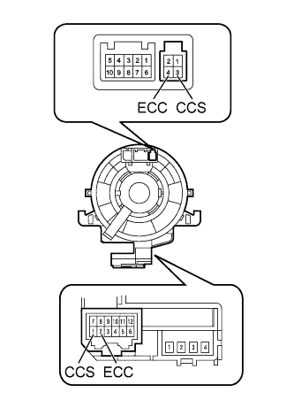
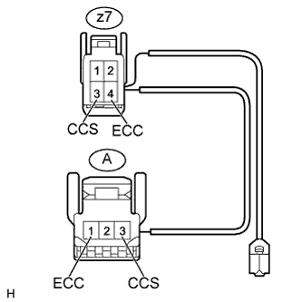

СИСТЕМА КРУИЗ-КОНТРОЛЯ > Цепь выключателя круиз-контроля |
| 1.СНИМИТЕ ПОКАЗАНИЯ ПОРТАТИВНОГО ДИАГНОСТИЧЕСКОГО ПРИБОРА |
Используя режим Data List, убедитесь, что выключатель круиз-контроля функционирует надлежащим образом (Нажмите здесь).
| Информация на дисплее прибора | Измеряемая величина / диапазон измерения | Нормальное состояние | Замечание по диагностике |
| Main SW M-CPU | Выключатель круиз-контроля (главный процессор) / ON (ВКЛ) или OFF (ВЫКЛ) | ON (ВКЛ): Выключатель круиз-контроля включен OFF (ВЫКЛ): Выключатель круиз-контроля выключен | - |
| Cancel Switch | Сигнал выключателя CANCEL / ON (ВКЛ) или OFF (ВЫКЛ) | ON (ВКЛ): выключатель CANCEL включен OFF (ВЫКЛ): выключатель CANCEL выключен | - |
| SET/COAST Switch | Сигнал выключателя -SET / ON (ВКЛ) или OFF (ВЫКЛ) | ON (ВКЛ): выключатель -SET включен OFF (ВЫКЛ): выключатель -SET выключен | - |
| RES/ACC Switch | Сигнал выключателя +RES / ON (ВКЛ) или OFF (ВЫКЛ) | ON (ВКЛ): выключатель +RES включен OFF (ВЫКЛ): выключатель +RES выключен | - |
|
| ||||
| OK | ||
| ||
| 2.ПРОВЕРЬТЕ ВИТОЙ КАБЕЛЬ В СБОРЕ |
Снимите витой кабель в сборе (Нажмите здесь).
|  |
При обнаружении каких-либо из перечисленных ниже неполадок замените витой кабель новым: царапины, трещины, вмятины и сколы на разъеме или витом кабеле.
Проверьте витой кабель.
Установите витой кабель в центральное положение (Нажмите здесь).
Поверните витой кабель на 2,5 оборота по часовой стрелке и измерьте сопротивление в соответствии со значениями, приведенными в таблице. Затем поверните витой кабель на 5 оборотов против часовой стрелки и измерьте сопротивление в соответствии со значениями, приведенными в таблице.
| Контакты для подключения диагностического прибора | Условие | Заданные условия |
| 3 (CCS) - 1 (CCS) | Всегда | Менее 1 Ом |
| 4 (ECC) - 2 (ECC) |
Установите витой кабель в центральное положение и поверните его на 2,5 оборота по часовой стрелке. Затем, вращая витой кабель на 5 оборотов против часовой стрелки, измерьте сопротивление в соответствии со значениями, приведенными в таблице.
| Контакты для подключения диагностического прибора | Условие | Заданные условия |
| 3 (CCS) - 1 (CCS) | Всегда | Менее 1 Ом |
| 4 (ECC) - 2 (ECC) |
|
| ||||
| OK | |
| 3.ПРОВЕРЬТЕ ЭЛЕКТРОПРОВОДКУ ГЛАВНОГО ВЫКЛЮЧАТЕЛЯ КРУИЗ-КОНТРОЛЯ |
|  |
Отсоедините разъем z7 витого кабеля.
Отсоедините разъем выключателя А.
Измерьте сопротивление в соответствии со значениями, приведенными в таблице ниже.
| Контакты для подключения диагностического прибора | Условие | Заданные условия |
| z7-3 (CCS) - A-3 (CCS) | Всегда | Менее 2,5 Ом |
| z7-4 (ECC) - A-1 (ECC) | ||
| z7-3 (CCS) - масса | Всегда | 1 МОм или более |
| z7-4 (ECC) - масса |
|
| ||||
| OK | |
| 4.ПРОВЕРЬТЕ ВЫКЛЮЧАТЕЛЬ КРУИЗ-КОНТРОЛЯ |
Снимите выключатель круиз-контроля (Нажмите здесь).

Измерьте сопротивление в соответствии со значениями, приведенными в таблице ниже.
| Контакты для подключения диагностического прибора | Положение переключателя | Заданные условия |
| 3 (CCS) - 1(ECC) | Выключатель круиз-контроля включен | Менее 2,5 Ом |
| Выключатель круиз-контроля выключен | 1 МОм или более | |
| Выключатель +RES удерживается во включенном положении | 235 - 245 Ом | |
| Выключатель -SET удерживается во включенном положении | 617 - 643 Ом | |
| Выключатель CANCEL удерживается во включенном положении | 1509 - 1571 Ом |
|
| ||||
| OK | |
| 5.ПРОВЕРЬТЕ ЖГУТ ПРОВОДОВ И РАЗЪЕМ (ВИТОЙ КАБЕЛЬ - ECM И МАССА) |
Отсоедините разъем G40 витого кабеля.
Отсоедините разъем G56*1 или G57*2 ECM.
Измерьте сопротивление в соответствии со значениями, приведенными в таблице ниже.
| Контакты для подключения диагностического прибора | Условие | Заданные условия |
| G40-1 (CCS) - G56-11 (CCS) | Всегда | Менее 1 Ом |
| G40-2 (ECC) - масса | ||
| G40-1 (CCS) - масса | Всегда | 10 кОм или более |
| Контакты для подключения диагностического прибора | Условие | Заданные условия |
| G40-1 (CCS) - G57-14 (CCS) | Всегда | Менее 1 Ом |
| G40-2 (ECC) - масса | ||
| G40-1 (CCS) - масса | Всегда | 10 кОм или более |
| Результат | Следующий шаг |
| OK (для моделей с 1GR-FE) | А |
| OK (для моделей с 1KD-FTV) | B |
| NG | C |
|
| ||||
|
| ||||
| А | ||
| ||